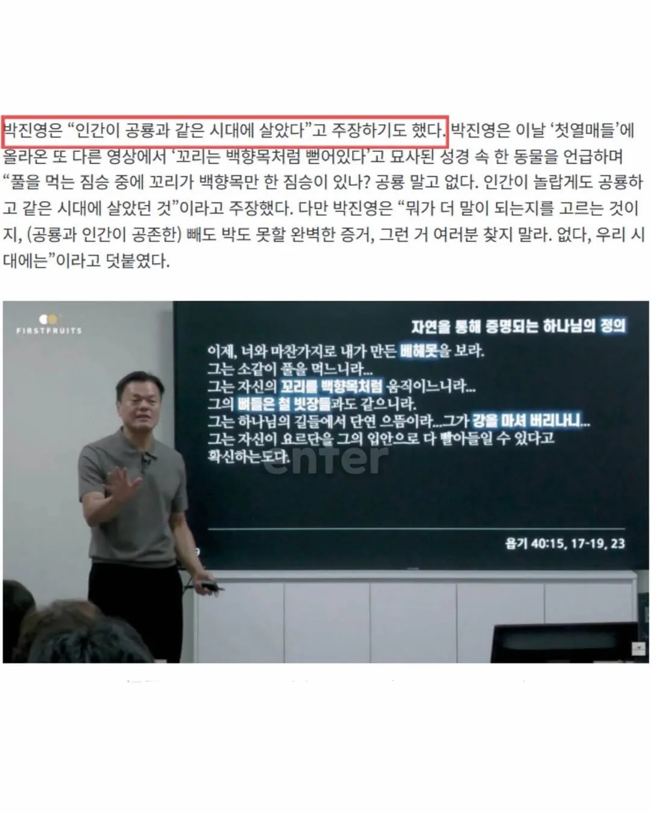

여기 증거가 있다

여기 증거가 있다
책을 한권도 제대로 다 안본사람
아니 그 똑똑하고 행동력있고 언행일치 하시던분이………
지금 새들이 공룡이라 지금도 인간이랑 공룡이랑 같이 살고있긴해 ㅋㅋ
많은 사이비들이 성경공부로 시작해서 해석을 마음대로 함
기독교의 가장 큰 문제가 그거라고 생각함. 성경의 해석이 개개인에게 있음.
카톨릭은 중앙에서 다 해석해서 내려주고, 다르게 해석하면 이단/파문임.
베헤모스가 하마나 코끼리에 기반한 상상속 동물이라고 알고있었는데 나무위키에 재밌는 가설이 있네
백향목같은 꼬리를 진짜 꼬리가 아니라 수컷 코끼리의 우람한 고추라고 생각하면 저기 나온 묘사가 코끼리랑 맞아떨어짐
발기하면 1.5미터까지도 커지는 고추를 처음보면 그게 고추라고는 생각못하고 꼬리로 보일법도해
맞는 말이지
인간하고 갈루스 갈루스 도메스티쿠스는 같이 살았어
저거 맞음 바키에서도 피클이 티라노랑 맞짱떠서 잡아먹음
이래서 기독교 사이비가 무서운겨
치킨??
난 어제도 공룡고기를 먹었다
닭도 공룡의 후예이긴해 ㅋㅋㅋㅋ
몬헌이 실제로 있었던 일인줄 아는거 아님?
네르기간테는 실존했다
옜날 사람들은 학교도 부정입학으로 간게 대부분 아닐까? 이딴게 연대 지질학과일리가 없자나 ㅋㅋㅋ 중졸 수준의 발언을 계속하는데
인간이 아니라 인간의 조상이 같이 살았을걸
기독교계의 큰별이 오늘내일하니 새로운 기독교 스타가 나오네 ㅋㅋ
힘의 균형은 유지되는구만
오늘 저녁에도 치킨 시켜 먹을 거니까 공룡이랑 같은 시대 사는 건 맞지
내 주니어가 롯데타워처럼 뻗어있다고 묘사하면
'롯데타워만한 주니어'라고 읽힌단 거야?
축하드립니다 박진영식 독해법에 의거하면 주니어가 롯데타워만하시네요
닭이
공룡 그 자체여
아 왜 점점 병신되가는것 같냐... 종교에 심취하면 사이비가 되면서 저능아가 된다더만... 맹목적인 믿음인건가 아니면 저게 단편적인 짤이라 내가 오해하는건가... 나 주식 많이 들고 있다고 ㅅㅂㄹ ㅠㅠㅠㅠㅠㅠㅠㅠ
기왕 이렇게된거 주주로서 성경공부하세요
그.. 베헤모스는 없는거야 진영아
성경무오류설에 집착하는구먼ㅎㅎㅎ박진형도 이제 가는구나..
오우 주여.....
왜 저렇게 헥까닥 돌아버린거지 저런거보면 성경이 ㄹㅇ 위험한 책인거같음 판타지&크툴루물에서 간간이 나오는 읽으면 미쳐버리는 책 그런거같이
실존하는 마도서 ㅋㅋㅋ
왜저래 진짜
..?
맞는말임 그러니 공룡오적한테 배신당한거임
환핀대전과 공룡오적 모름?
근데 사실 지금도 우린 공룡과함꼐 공룡을 먹으면서 살고있지 비조류 공룡이 전멸한거지 조류 공룡은 살아남았다고.
쟤 요즘 왜 저럼??
닭, 악어도 공룡 아나냐 ㅋㅋㅋ
악어는 그냥 같은 갈래에서 갈라져 나왔을뿐임
악어가 속한 분류, 공룡/익룡이 속한 분류가 묶여있는 큰 분류가 있음
성경은 틀리지가 않는다고